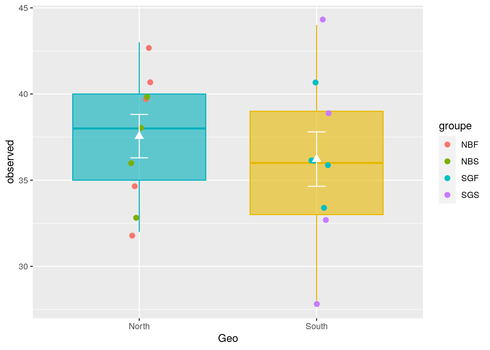
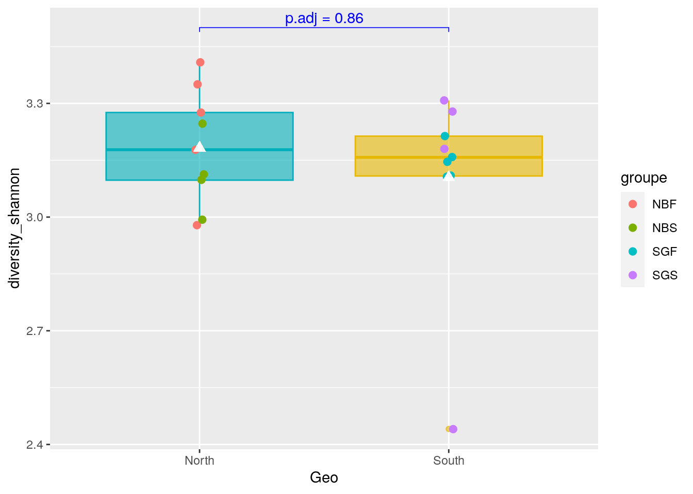
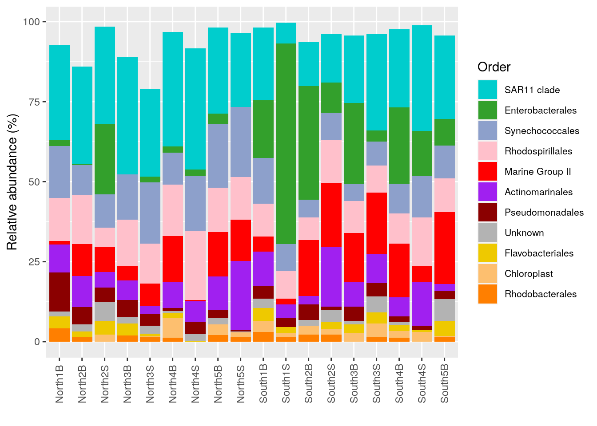

library(phyloseq)
library(ggplot2)
library(patchwork)PARTII_alpha_Diversity_ANF
1 Prepare workspace
1.1 Load libraries
1.2 Load custom functions
devtools::load_all()Warning: Objects listed as exports, but not present in namespace:
• primer_trim1.3 Define output folder
output_alpha <- here::here("outputs", "alpha_diversity")
if (!dir.exists(output_alpha)) dir.create(output_alpha, recursive = TRUE)1.4 Load the data and inspect the phyloseq object
physeq <- readRDS(here::here("data",
"asv_table",
"phyloseq_object_alpha_beta_div.rds"))2 Data Structure
- Phyloseq object
physeqphyloseq-class experiment-level object
otu_table() OTU Table: [ 213 taxa and 18 samples ]
sample_data() Sample Data: [ 18 samples by 21 sample variables ]
tax_table() Taxonomy Table: [ 213 taxa by 7 taxonomic ranks ]
phy_tree() Phylogenetic Tree: [ 213 tips and 212 internal nodes ]
refseq() DNAStringSet: [ 213 reference sequences ]2.1 Composition of our phyloseq object physeq
2.1.1 An ASV table with the absolute counts
Be careful: Rows are samples, columns are ASVs
physeq@otu_table[1:10,1:10]OTU Table: [10 taxa and 10 samples]
taxa are columns
ASV1 ASV2 ASV3 ASV4 ASV5 ASV6 ASV7 ASV8 ASV9 ASV10
S11B 117 25 85 70 87 40 57 34 41 0
S1B 67 0 23 0 51 48 0 0 27 58
S2B 43 0 35 15 42 52 0 0 0 43
S2S 103 87 76 12 99 43 36 72 46 0
S3B 59 0 32 0 49 73 0 0 0 57
S3S 81 10 0 20 36 0 0 0 0 50
S4B 11 6 38 33 43 46 0 8 0 37
S4S 68 6 38 0 62 0 0 11 30 46
S5B 176 18 62 109 0 35 56 13 33 82
S5S 182 0 36 101 51 0 33 0 29 422.1.2 A metadata table with information (e.g. physicochemical, categorical variables) about samples
physeq@sam_data SampName Geo Description groupe Pres PicoEuk Synec Prochloro NanoEuk
S11B S11B South South5B SGF 35 5370 46830 580 6010
S1B S1B North North1B NBF 52 660 32195 10675 955
S2B S2B North North2B NBF 59 890 25480 16595 670
S2S S2S North North2S NBS 0 890 25480 16595 670
S3B S3B North North3B NBF 74 835 13340 25115 1115
S3S S3S North North3S NBS 0 715 26725 16860 890
S4B S4B North North4B NBF 78 2220 3130 29835 2120
S4S S4S North North4S NBS 78 2220 3130 29835 2120
S5B S5B North North5B NBF 42 1620 55780 23795 2555
S5S S5S North North5S NBS 0 1620 56555 22835 2560
S6B S6B South South1B SGF 13 2520 39050 705 3630
S6S S6S South South1S SGS 0 2435 35890 915 3735
S7B S7B South South2B SGF 26 0 0 0 4005
S7S S7S South South2S SGS 0 4535 26545 1340 6585
S8B S8B South South3B SGF 33 0 0 0 5910
S8S S8S South South3S SGS 0 4260 36745 985 5470
S9B S9B South South4B SGF 25 4000 31730 485 4395
S9S S9S South South4S SGS 0 5465 32860 820 5045
Crypto SiOH4 NO2 NO3 NH4 PO4 NT PT Chla T S
S11B 1690 3.324 0.083 0.756 0.467 0.115 9.539 4.138 0.0182 23.0308 38.9967
S1B 115 1.813 0.256 0.889 0.324 0.132 9.946 3.565 0.0000 22.7338 37.6204
S2B 395 2.592 0.105 1.125 0.328 0.067 9.378 3.391 0.0000 22.6824 37.6627
S2S 395 3.381 0.231 0.706 0.450 0.109 8.817 3.345 0.0000 22.6854 37.6176
S3B 165 1.438 0.057 1.159 0.369 0.174 8.989 2.568 0.0000 21.5296 37.5549
S3S 200 1.656 0.098 0.794 0.367 0.095 7.847 2.520 0.0000 22.5610 37.5960
S4B 235 2.457 0.099 1.087 0.349 0.137 8.689 3.129 0.0000 18.8515 37.4542
S4S 235 2.457 0.099 1.087 0.349 0.137 8.689 3.129 0.0000 18.8515 37.4542
S5B 1355 2.028 0.103 1.135 0.216 0.128 8.623 3.137 0.0102 24.1905 38.3192
S5S 945 2.669 0.136 0.785 0.267 0.114 9.146 3.062 0.0000 24.1789 38.3213
S6B 1295 2.206 0.249 0.768 0.629 0.236 9.013 3.455 0.0000 22.0197 39.0877
S6S 1300 3.004 0.251 0.927 0.653 0.266 8.776 3.230 0.0134 22.0515 39.0884
S7B 1600 3.016 0.157 0.895 0.491 0.176 8.968 4.116 0.0000 23.6669 38.9699
S7S 1355 1.198 0.165 1.099 0.432 0.180 8.256 3.182 0.0000 23.6814 38.9708
S8B 1590 3.868 0.253 0.567 0.533 0.169 8.395 3.126 0.0000 23.1236 39.0054
S8S 2265 3.639 0.255 0.658 0.665 0.247 8.991 3.843 0.0132 23.3147 38.9885
S9B 1180 3.910 0.107 0.672 0.490 0.134 8.954 4.042 0.0172 22.6306 38.9094
S9S 1545 3.607 0.139 0.644 0.373 0.167 9.817 3.689 0.0062 22.9545 38.7777
Sigma_t
S11B 26.9631
S1B 26.0046
S2B 26.0521
S2S 26.0137
S3B 26.2987
S3S 26.0332
S4B 26.9415
S4S 26.9415
S5B 26.1037
S5S 26.1065
S6B 27.3241
S6S 27.3151
S7B 26.7536
S7S 26.7488
S8B 26.9423
S8S 26.8713
S9B 27.0131
S9S 26.81722.1.3 A table of taxonomic classification level of each ASV
physeq@tax_table[1:10,]Taxonomy Table: [10 taxa by 7 taxonomic ranks]:
Kingdom Phylum Class Order
ASV1 "Bacteria" "Cyanobacteria" "Cyanobacteriia" "Synechococcales"
ASV2 "Bacteria" "Proteobacteria" "Gammaproteobacteria" "Enterobacterales"
ASV3 "Bacteria" "Proteobacteria" "Alphaproteobacteria" "SAR11 clade"
ASV4 "Archaea" "Thermoplasmatota" "Thermoplasmata" "Marine Group II"
ASV5 "Bacteria" "Proteobacteria" "Alphaproteobacteria" "SAR11 clade"
ASV6 "Bacteria" "Proteobacteria" "Alphaproteobacteria" "SAR11 clade"
ASV7 "Bacteria" "Proteobacteria" "Alphaproteobacteria" "Rhodospirillales"
ASV8 "Bacteria" "Proteobacteria" "Gammaproteobacteria" "Enterobacterales"
ASV9 "Bacteria" "Proteobacteria" "Alphaproteobacteria" "SAR11 clade"
ASV10 "Bacteria" "Proteobacteria" "Alphaproteobacteria" "SAR11 clade"
Family Genus Species
ASV1 "Cyanobiaceae" "Synechococcus CC9902" NA
ASV2 "Pseudoalteromonadaceae" "Pseudoalteromonas" NA
ASV3 "Clade I" "Clade Ia" NA
ASV4 NA NA NA
ASV5 "Clade I" "Clade Ia" NA
ASV6 "Clade II" NA NA
ASV7 "AEGEAN-169 marine group" NA NA
ASV8 "Pseudoalteromonadaceae" "Pseudoalteromonas" NA
ASV9 "Clade I" "Clade Ia" NA
ASV10 "Clade I" "Clade Ia" NA 2.1.4 A Phylogenetic tree
physeq@phy_tree
Phylogenetic tree with 213 tips and 212 internal nodes.
Tip labels:
ASV1, ASV2, ASV3, ASV4, ASV5, ASV6, ...
Rooted; includes branch lengths.2.1.5 A table with the ASV sequences
physeq@refseqDNAStringSet object of length 213:
width seq names
[1] 402 GGAATTTTCCGCAATGGGCGAA...CGAAAGCCAGGGGAGCGAAAGG ASV1
[2] 425 GGAATATTGCACAATGGGCGCA...CGAAAGCGTGGGGAGCAAACAG ASV2
[3] 400 GGAATCTTGCACAATGGAGGAA...CGAAAGCATGGGTAGCGAAGAG ASV3
[4] 383 CGAAAACTTGACAATGCGAGCA...CGAAGCCTAGGGGCACGAACCG ASV4
[5] 400 GGAATCTTGCACAATGGAGGAA...CGAAAGCATGGGTAGCGAAGAG ASV5
... ... ...
[209] 426 GGAATTTTGCGCAATGGACGAA...CGAAAGCGTGGGGAGCGAACAG ASV209
[210] 403 GGAATATTGCACAATGGGCGCA...GGTCAACACTGACGCTCATGTA ASV210
[211] 360 CGAAAACTTCACACTGCAGGAA...GAACGGATCCGACGGTCAGGGA ASV211
[212] 400 GGAATATTGGACAATGGGCGAA...CGAAAGCGTGGGTAGCAAACAG ASV212
[213] 404 GGAATATTGCACAATGGGCGCA...GTCAACACTGACGCTCATGTAC ASV2133 Subsampling normalization
3.1 Rarefaction Curves
Before normalization by sub-sampling, let’s have a look at rarefaction curves, evaluate your sequencing effort and make decisions
3.1.1 Identify your minimum sample size
phyloseq::sample_sums(physeq)S11B S1B S2B S2S S3B S3S S4B S4S S5B S5S S6B S6S S7B S7S S8B S8S
975 837 893 983 878 889 917 1077 1018 1006 1076 937 878 936 846 958
S9B S9S
888 991 What is the minimum sample size?
3.1.2 Run rarefaction curves using our custom function ggrare() (defined in R/alpha_diversity.R)
#Make rarefaction curves & Add min sample size line
ggrare(physeq, step = 10, color = "Description", se = FALSE) +
geom_vline(xintercept = min(sample_sums(physeq)), color = "gray60")Warning in vegan::rarefy(x[i, , drop = FALSE], n, se = se): most observed count
data have counts 1, but smallest count is 2
Warning in vegan::rarefy(x[i, , drop = FALSE], n, se = se): most observed count
data have counts 1, but smallest count is 2
Warning in vegan::rarefy(x[i, , drop = FALSE], n, se = se): most observed count
data have counts 1, but smallest count is 2
Warning in vegan::rarefy(x[i, , drop = FALSE], n, se = se): most observed count
data have counts 1, but smallest count is 2
Warning in vegan::rarefy(x[i, , drop = FALSE], n, se = se): most observed count
data have counts 1, but smallest count is 2
Warning in vegan::rarefy(x[i, , drop = FALSE], n, se = se): most observed count
data have counts 1, but smallest count is 2
Warning in vegan::rarefy(x[i, , drop = FALSE], n, se = se): most observed count
data have counts 1, but smallest count is 2
Warning in vegan::rarefy(x[i, , drop = FALSE], n, se = se): most observed count
data have counts 1, but smallest count is 2Warning in vegan::rarefy(x[i, , drop = FALSE], n, se = se): most observed count
data have counts 1, but smallest count is 4Warning in vegan::rarefy(x[i, , drop = FALSE], n, se = se): most observed count
data have counts 1, but smallest count is 3Warning in vegan::rarefy(x[i, , drop = FALSE], n, se = se): most observed count
data have counts 1, but smallest count is 2
Warning in vegan::rarefy(x[i, , drop = FALSE], n, se = se): most observed count
data have counts 1, but smallest count is 2
Warning in vegan::rarefy(x[i, , drop = FALSE], n, se = se): most observed count
data have counts 1, but smallest count is 2
Warning in vegan::rarefy(x[i, , drop = FALSE], n, se = se): most observed count
data have counts 1, but smallest count is 2Warning in vegan::rarefy(x[i, , drop = FALSE], n, se = se): most observed count
data have counts 1, but smallest count is 4
Warning in vegan::rarefy(x[i, , drop = FALSE], n, se = se): most observed count
data have counts 1, but smallest count is 4Do you think is a good idea to normalize your data using this minimal sample size?
3.2 Normalization process for alpha diversity: sub-sampling
physeq_rar <- phyloseq::rarefy_even_depth(physeq, rngseed = TRUE)Check the number of sequences for each sample using sample_sums function
Did you lost a lot of ASVs?
3.3 Run rarefaction curves on normalized data
p0 <- ggrare(physeq_rar, step = 10, color = "Description", se = TRUE)Warning in vegan::rarefy(x[i, , drop = FALSE], n, se = se): most observed count
data have counts 1, but smallest count is 2
Warning in vegan::rarefy(x[i, , drop = FALSE], n, se = se): most observed count
data have counts 1, but smallest count is 2
Warning in vegan::rarefy(x[i, , drop = FALSE], n, se = se): most observed count
data have counts 1, but smallest count is 2Warning in vegan::rarefy(x[i, , drop = FALSE], n, se = se): most observed count
data have counts 1, but smallest count is 3Warning in vegan::rarefy(x[i, , drop = FALSE], n, se = se): most observed count
data have counts 1, but smallest count is 4
3.4 Group separation
p0 + facet_wrap(~Geo, ncol = 2)
4 IV-Alpha Diversity
4.1 Indices
4.1.1 Get taxonomy-based diversity indices
#Get indices with alpha function (NB: index="all" if you want all the indices)
alpha_indices <- microbiome::alpha(
physeq_rar,
index = c("observed", "diversity_gini_simpson",
"diversity_shannon", "evenness_pielou",
"dominance_relative")
)
#save
write.table(alpha_indices,
file = file.path(output_alpha, "indices_alpha_resultat.txt"),
sep = "\t")
#which type?
class(alpha_indices)[1] "data.frame"#see
alpha_indices observed diversity_gini_simpson diversity_shannon evenness_pielou
S11B 36 0.9447863 3.146480 0.8780420
S1B 35 0.9477924 3.177766 0.8937989
S2B 43 0.9577758 3.408022 0.9060997
S2S 36 0.9414576 3.112066 0.8684385
S3B 41 0.9503989 3.275906 0.8821441
S3S 38 0.9491313 3.246802 0.8925706
S4B 40 0.9570249 3.350694 0.9083230
S4S 40 0.9363446 3.097474 0.8396788
S5B 32 0.9271578 2.978541 0.8594252
S5S 33 0.9253250 2.993341 0.8560944
S6B 41 0.9439556 3.213508 0.8653415
S6S 28 0.8247810 2.440971 0.7325395
S7B 36 0.9435901 3.157702 0.8811735
S7S 44 0.9488744 3.278296 0.8663140
S8B 33 0.9452117 3.108474 0.8890226
S8S 39 0.9517578 3.307644 0.9028494
S9B 36 0.9443038 3.105908 0.8667202
S9S 33 0.9487545 3.180393 0.9095912
dominance_relative
S11B 0.10274791
S1B 0.10274791
S2B 0.09677419
S2S 0.10991637
S3B 0.10991637
S3S 0.10991637
S4B 0.08721625
S4S 0.14336918
S5B 0.16606930
S5S 0.18876941
S6B 0.13620072
S6S 0.38351254
S7B 0.13022700
S7S 0.10633214
S8B 0.09438471
S8S 0.09677419
S9B 0.09438471
S9S 0.10394265What can you notice for one sample?
How to show this graphically?
4.1.2 Add the alpha indices result to your metadata (sample_data) phyloseq object
Important because many times you will probably want to add new variables in the phyloseq class object!!!
#Turn into sample_data object : sample_data function
alpha_indices <- phyloseq::sample_data(alpha_indices)
#See
class(alpha_indices)[1] "sample_data"
attr(,"package")
[1] "phyloseq"#Add alpha_indices to phyloseq sample_data object: merge_phyloseq function!
physeq_rar <- phyloseq::merge_phyloseq(physeq_rar, alpha_indices)
#See the result
sample_data(physeq_rar)4.2 Alpha diversity representations
This section will show you how to plot by different ways the alpha diversity and its customization. Understand how it works!
4.2.1 Alpha representations using phyloseq::plot_richness()
You are limited to the indices calculated by the phyloseq::estimate_richness function (i.e.”Observed”, “Chao1”, “ACE”, “Shannon”, “Simpson”, “InvSimpson”, “Fisher”).
4.2.1.1 Selected indices + SampName
x allow you to choose the column from sample_data(physeq_rar) for applying the label
phyloseq::plot_richness(physeq_rar, x = "SampName",
measures = c("Observed", "Shannon", "Simpson"))4.2.2 Color by group: color = Geo & change sample name
For color option pass the column of sample_data(physeq_rar) that you want. Here different colors is applied depending on Geo (which is North and South, so 2 different colors)
phyloseq::plot_richness(physeq_rar,
x = "Description",
color="Geo",
measures=c("Observed", "Shannon", "Simpson"))4.2.3 Make box_plot by adding geom_boxplot function
phyloseq::plot_richness(physeq_rar,
x="Geo",
color="Geo",
measures=c("Observed", "Shannon", "Simpson")) +
ggplot2::geom_boxplot()4.2.4 Make box_plot : geom_boxplot + fill color of boxplot (fill) + transparency (with alpha)
phyloseq::plot_richness(physeq_rar,
x = "Geo",
measures = c("Observed", "Shannon", "Simpson")) +
ggplot2::geom_boxplot(aes(fill = Geo), alpha = 0.4)4.2.5 Alpha representations using Microbiome::boxplot_alpha (not shown)
Again, you are limited to the indices calculated by the Microbiome::alpha function
4.2.6 Alpha representations using ggplot2
Interest: Freedom!! you can use ANY indices that you have calculated from different packages & included in sample_data
#Before : Change your phyloseq class oject sample_data as a dataframe
metadata <- data.frame(sample_data(physeq_rar))4.2.6.1 Boxplot, color control, points and Mean SD: stat_summary()
ggplot(metadata, aes(x = Geo, y = observed)) +
geom_boxplot(alpha = 0.6,
fill = c("#00AFBB", "#E7B800"),
color=c("#00AFBB", "#E7B800")) +
geom_jitter(aes(colour = groupe), position = position_jitter(0.07), cex = 2.2) +
stat_summary(fun = mean, geom = "point", shape = 17, size = 3, color = "white") +
stat_summary(fun.data = "mean_se", geom = "errorbar", width = .1, color = "white")
4.2.6.2 Combine graphs on same figure: patchwork
#Put your graphs in different variables P1,P2,P3
p1 <- ggplot(metadata, aes(x = Geo, y = observed)) +
geom_boxplot(alpha = 0.6,
fill = c("#00AFBB","#E7B800"),
color=c("#00AFBB","#E7B800")) +
geom_jitter(aes(colour = groupe), position = position_jitter(0.07), cex = 2.2) +
theme(axis.title.x = element_blank())
p2 <- ggplot(metadata, aes(x = Geo, y = evenness_pielou)) +
geom_boxplot(alpha = 0.6,
fill = c("#00AFBB", "#E7B800"),
color = c("#00AFBB", "#E7B800")) +
geom_jitter(aes(colour = groupe), position = position_jitter(0.07), cex = 2.2) +
theme(axis.title.x = element_blank())
p3 <- ggplot(metadata, aes(x = Geo, y = diversity_gini_simpson)) +
geom_boxplot(alpha = 0.6,
fill = c("#00AFBB", "#E7B800"),
color = c("#00AFBB", "#E7B800")) +
geom_jitter(aes(colour = groupe), position = position_jitter(0.07), cex = 2.2) +
theme(axis.title.x = element_blank())#Put the graph of p1, p2 and p3 on same Figure
p1 + p2 + p3 +
patchwork::plot_annotation(tag_levels = "A") +
patchwork::plot_layout(guides = "collect")5 Statistical hypothesis for alpha diversity
5.0.1 Normality test: Check the Normal or not normal distribution of your data to choose the right test!
5.0.1.1 Shapiro test: H0 Null Hypothesis: follows Normal distribution!
Means if p<0.05 -> reject the H0 (so does not follow a normal distribution)
5.0.1.2 Q-Qplots: Compare your distribution with a theoretical normal distribution
If your data follow a normal distribution, you’re expecting a linear relationship theoritical vs. experimental
Our custom function indices_normality() (defined in R/alpha_diversity.R) plots the results of Shapiro test as well as Q-Qplots.
5.0.2 Select indices to test & run normality check
metadata |>
dplyr::select(observed,
diversity_gini_simpson,
diversity_shannon,
evenness_pielou) |>
indices_normality(nrow = 3, ncol = 2)
What are your conclusions?
5.1 ANOVA: parametric (follows normal distribution) AND at least 3 groups
5.1.0.1 Anova for Observed ASV and 4 groups
# How many groups used? See the column "groupe" of metadata:
factor(metadata$groupe) [1] SGF NBF NBF NBS NBF NBS NBF NBS NBF NBS SGF SGS SGF SGS SGF SGS SGF SGS
Levels: NBF NBS SGF SGS5.1.0.2 Variance
# Check homogeneity of variance between groups
# (avoid bias in ANOVA result & keep the power of the test)
# H0= equality of variances in the different populations
stats::bartlett.test(observed ~ groupe, metadata)
Bartlett test of homogeneity of variances
data: observed by groupe
Bartlett's K-squared = 3.1798, df = 3, p-value = 0.3647Conclusion?
5.1.1 Alternative to Bartlett : Levene test (package car), less sensitive to normality deviation
Global Test: Anova tell you if that some of the group means are different, but you don’t know which pairs of groups are different!
aov_observed <- stats::aov(observed ~ groupe, metadata)
summary(aov_observed) Df Sum Sq Mean Sq F value Pr(>F)
groupe 3 13.03 4.343 0.211 0.887
Residuals 14 288.75 20.625 5.1.1.1 Which pairs of groups are different? -> Post-hoc test: Tukey multiple pairwise-comparisons
signif_pairgroups <- stats::TukeyHSD(aov_observed, method = "bh")
signif_pairgroups Tukey multiple comparisons of means
95% family-wise confidence level
Fit: stats::aov(formula = observed ~ groupe, data = metadata)
$groupe
diff lwr upr p adj
NBS-NBF -1.45 -10.304898 7.404898 0.9631679
SGF-NBF -1.80 -10.148478 6.548478 0.9217657
SGS-NBF -2.20 -11.054898 6.654898 0.8866424
SGF-NBS -0.35 -9.204898 8.504898 0.9994302
SGS-NBS -0.75 -10.083882 8.583882 0.9953019
SGS-SGF -0.40 -9.254898 8.454898 0.99915105.2 Kruskal-Wallis: non-parametric & at least three groups
5.2.0.1 Kruskal for diversity_shannon and 4 groups
Global test
stats::kruskal.test(diversity_shannon ~ groupe, data = metadata)
Kruskal-Wallis rank sum test
data: diversity_shannon by groupe
Kruskal-Wallis chi-squared = 2.9544, df = 3, p-value = 0.39875.2.0.2 Post hoc test: Dunn test (pairwise group test)
signifgroup <- FSA::dunnTest(diversity_shannon ~ groupe,
data = metadata,
method = "bh")Warning: groupe was coerced to a factor.#See
signifgroup Comparison Z P.unadj P.adj
1 NBF - NBS 1.5218359 0.1280502 0.7683013
2 NBF - SGF 1.2439326 0.2135244 0.6405731
3 NBS - SGF -0.3490449 0.7270556 0.7270556
4 NBF - SGS 0.4048921 0.6855568 0.8226682
5 NBS - SGS -1.0596259 0.2893148 0.5786297
6 SGF - SGS -0.7678988 0.4425473 0.66382095.3 T-test: parametric, 2 groups (i.e North Vs. Sud)
stats::bartlett.test(observed ~ Geo, metadata)
Bartlett test of homogeneity of variances
data: observed by Geo
Bartlett's K-squared = 0.38191, df = 1, p-value = 0.5366observed_ttest <- stats::t.test(observed ~ Geo, data = metadata)
#see
observed_ttest
Welch Two Sample t-test
data: observed by Geo
t = 0.66008, df = 15.246, p-value = 0.5191
alternative hypothesis: true difference in means between group North and group South is not equal to 0
95 percent confidence interval:
-2.966072 5.632739
sample estimates:
mean in group North mean in group South
37.55556 36.22222 5.4 Wilcoxon rank sum: non-parametric & 2 Groups
pairwise_test <- ggpubr::compare_means(diversity_shannon ~ Geo,
metadata,
method = "wilcox.test")
#See
pairwise_test# A tibble: 1 × 8
.y. group1 group2 p p.adj p.format p.signif method
<chr> <chr> <chr> <dbl> <dbl> <chr> <chr> <chr>
1 diversity_shannon South North 0.863 0.86 0.86 ns Wilcoxon5.4.1 Boxplot representation with p-value information
#Boxplot as previously seen
graph_shan <- ggplot(metadata, aes(x = Geo, y = diversity_shannon)) +
geom_boxplot(alpha=0.6,
fill = c("#00AFBB", "#E7B800"),
color = c("#00AFBB", "#E7B800")) +
geom_jitter(aes(colour = groupe),
position = position_jitter(0.02) ,
cex=2.2)+
stat_summary(fun = mean, geom = "point",
shape = 17, size = 3,
color = "white")
#Add p-value on graph
graph_shan + ggpubr::stat_pvalue_manual(
pairwise_test,
y.position = 3.5,
label = "p.adj = {p.adj}",
color = "blue",
linetype = 1,
tip.length = 0.01
)
6 Taxonomy: barplot graph
6.1 Abundance Transformation
6.1.1 Counts in percentage using phyloseq::transform_sample_counts()
pourcentS <- phyloseq::transform_sample_counts(physeq_rar, function(x) x/sum(x) * 100)See plot:
phyloseq::plot_bar(pourcentS)What are the separation lines?
6.1.2 Summarise at a given taxonomic level with phyloseq::tax_glom()
Remember ranks can be obtained with phyloseq::rank_names()
phyloseq::rank_names(pourcentS)[1] "Kingdom" "Phylum" "Class" "Order" "Family" "Genus" "Species"Phylum_glom <- phyloseq::tax_glom(pourcentS,
taxrank = "Phylum",
NArm = FALSE)
#Plot at Phylum taxonomic rank, with color
phyloseq::plot_bar(Phylum_glom, fill = "Phylum") 
NArm?
6.1.3 Filter phylum (mean of the line): phyloseq::filter_taxa()
Let’s filter out the phylums with a mean relative abundance inferior to 1%
Phylum_1 <- phyloseq::filter_taxa(Phylum_glom,
flist = function(x) mean(x) >= 1,
prune = TRUE)
#Plot at Phylum taxonomic rank, with color
phyloseq::plot_bar(Phylum_1, fill = "Phylum") 6.1.4 How to save a table into a file: exemple of phylum taxonomic table
write.table(df_export(otu_table(Phylum_glom)),
row.names = FALSE,
file = file.path(output_alpha, "Phylum_pourcent.tsv"),
sep = "\t")6.1.5 Remove black lines
phyloseq::plot_bar(Phylum_glom, "Description", fill = "Phylum") +
geom_bar(aes(colour = Phylum), stat = "identity")
6.2 Microbiome package
6.2.1 microbiome::aggregate_taxa()
# Order Rank
Order_microb <- microbiome::aggregate_taxa(pourcentS, "Order")
#Filter at 1%
Order1 <- phyloseq::filter_taxa(Order_microb, function(x) mean(x) >= 1, prune = TRUE) 6.2.2 microbiome::plot_composition()
p_order <- microbiome::plot_composition(Order1,
otu.sort = "abundance",
sample.sort = "Description",
x.label = "Description",
plot.type = "barplot",
verbose = FALSE) +
ggplot2::labs(x = "", y = "Relative abundance (%)")
#see
p_order
#Average by group :average_by option
p_order_groupe <- microbiome::plot_composition(Order1,
otu.sort = "abundance",
sample.sort = "Description",
x.label = "Description",
plot.type = "barplot",
verbose = FALSE,
average_by = "Geo") +
ggplot2::labs(x = "", y = "Relative abundance (%)")
#see
p_order_groupe
6.2.3 Interactive barplot with plotly::ggplotly()
plotly::ggplotly(p_order)6.2.4 How to manage colors in barplots
With the number of Phyla, Order etc a barplot can become very confusing… Need to have distinct color for each taxonomic groups.
Use the library RColorBrewer et scale_fill_manual() See here to understand the possibilities
You can visualise RColorBrewer’s palettes with the following command:
RColorBrewer::display.brewer.all()6.2.5 Build your own palette
Let’s assemble from two RColorBrewer’s palettes a single 13 colors palette
#See Set2 colors
(col1 <- RColorBrewer::brewer.pal(name = "Set2", n = 8))[1] "#66C2A5" "#FC8D62" "#8DA0CB" "#E78AC3" "#A6D854" "#FFD92F" "#E5C494"
[8] "#B3B3B3"#See Paired colors
(col2 <- RColorBrewer::brewer.pal(name = "Paired", n = 5))[1] "#A6CEE3" "#1F78B4" "#B2DF8A" "#33A02C" "#FB9A99"#Build your set of colors using brewer.pal or your own colors
mycolors <- c(col1, col2)6.2.6 Use your palette in the p_order barplot
#Use scale_fill_manual
p_order +
ggplot2::scale_fill_manual("Order", values = mycolors) +
theme(legend.position = "right",
legend.text = element_text(size=8))
6.2.7 To go even further in chosing colors
order_color <- c(
"SAR11 clade" = "cyan3",
"Enterobacterales" = "#33A02C", # lime green
"Synechococcales" = "#8DA0CB", # light steel blue
"Rhodospirillales"="pink",
"Marine Group II"="red",
"Actinomarinales"="purple",
"Pseudomonadales" = "#8B0000", # dark red
"Unknown"="#B3B3B3",
"Flavobacteriales" = "gold2",
"Chloroplast" = "#FDBF6F", # light orange
"Rhodobacterales" = "darkorange1" # dark orange
)
p_order +
ggplot2::scale_fill_manual("Order", values = order_color) +
theme(legend.position = "right",
legend.text = element_text(size=8))
6.3 Other data Manipulation : select specific taxa, merge samples
6.3.1 Select Actinobacteria AND Bacteroidetes: phyloseq::subset_taxa()
myselection1 <- phyloseq::subset_taxa(Phylum_glom, Phylum == "Actinobacteriota" | Phylum == "Bacteroidota")
phyloseq::plot_bar(myselection1, x = "Description", fill = "Phylum")
phyloseq::plot_bar(myselection1, x = "Description",
fill="Phylum", facet_grid = ~Phylum) 6.3.2 Keep all with the exception of a class, a genus etc (e.g. contamination)
myselection2 <- phyloseq::subset_taxa(physeq, Class != "Thermoplasmata" | is.na(Class))6.3.3 Understand:
! = means IS NOT
| = AND
Is.na = do not remove the NA (Not Assigned at the Class rank), by default it will be removed. be careful!
6.3.4 Merge samples (groups, duplicates etc)
Use a column from metadata to group/merge samples (North & South)
(NordSud <- phyloseq::merge_samples(physeq_rar, "Geo"))Warning in asMethod(object): NAs introduced by coercion
Warning in asMethod(object): NAs introduced by coercion
Warning in asMethod(object): NAs introduced by coercion
Warning in asMethod(object): NAs introduced by coercionphyloseq-class experiment-level object
otu_table() OTU Table: [ 209 taxa and 2 samples ]
sample_data() Sample Data: [ 2 samples by 26 sample variables ]
tax_table() Taxonomy Table: [ 209 taxa by 7 taxonomic ranks ]
phy_tree() Phylogenetic Tree: [ 209 tips and 208 internal nodes ]6.3.5 Sample selection: phyloseq::subset_samples()
(sub_North <- phyloseq::subset_samples(pourcentS, Geo == "North"))phyloseq-class experiment-level object
otu_table() OTU Table: [ 209 taxa and 9 samples ]
sample_data() Sample Data: [ 9 samples by 26 sample variables ]
tax_table() Taxonomy Table: [ 209 taxa by 7 taxonomic ranks ]
phy_tree() Phylogenetic Tree: [ 209 tips and 208 internal nodes ]
refseq() DNAStringSet: [ 209 reference sequences ]6.3.6 Alternative way: phyloseq::prune_samples
Define what you want to keep
keep <- c("S1B", "S2S")Then extract these samples from pourcentS phyloseq object
keep2samples <- phyloseq::prune_samples(keep, pourcentS)
sample_names(keep2samples)[1] "S1B" "S2S"6.4 Retrieve sequences from a phyloseq object
6.4.1 One sequence:
Biostrings::writeXStringSet(physeq_rar@refseq["ASV1"],
filepath = file.path(output_alpha,"ASV1.fasta"),
format = "fasta")6.4.2 By name
listASV <- c("ASV2", "ASV8", "ASV32", "ASV58")Biostrings::writeXStringSet(physeq_rar@refseq[listASV],
filepath = file.path(output_alpha,"several_asvs.fasta"),
format = "fasta")6.4.3 From a selection
Let’s export a fasta files of all ASVs with a maximum relative abundance superior to 10% in North samples:
phyloseq::subset_samples(pourcentS, Geo == "North") |>
phyloseq::filter_taxa(flist = function(x) max(x) >= 10, prune = TRUE) |>
phyloseq::refseq() |>
Biostrings::writeXStringSet(
filepath = file.path(output_alpha, "fancy_selection_asvs.fasta"),
format = "fasta"
)6.4.4 Retrieve all sequences
Biostrings::writeXStringSet(physeq_rar@refseq,
filepath = file.path(output_alpha,"all_asvs.fasta"),
format = "fasta")7 Core microbiota analysis
Identify the taxa names of the core microbiota
7.0.1 Which core? Compare North & South core microbiota
#Create 2 phyloseq objects for North and South sample groups
sub_North <- phyloseq::subset_samples(pourcentS, Geo == "North")
sub_South <- phyloseq::subset_samples(pourcentS, Geo == "South")#Check group North ok
sub_North@sam_data SampName Geo Description groupe Pres PicoEuk Synec Prochloro NanoEuk
S1B S1B North North1B NBF 52 660 32195 10675 955
S2B S2B North North2B NBF 59 890 25480 16595 670
S2S S2S North North2S NBS 0 890 25480 16595 670
S3B S3B North North3B NBF 74 835 13340 25115 1115
S3S S3S North North3S NBS 0 715 26725 16860 890
S4B S4B North North4B NBF 78 2220 3130 29835 2120
S4S S4S North North4S NBS 78 2220 3130 29835 2120
S5B S5B North North5B NBF 42 1620 55780 23795 2555
S5S S5S North North5S NBS 0 1620 56555 22835 2560
Crypto SiOH4 NO2 NO3 NH4 PO4 NT PT Chla T S
S1B 115 1.813 0.256 0.889 0.324 0.132 9.946 3.565 0.0000 22.7338 37.6204
S2B 395 2.592 0.105 1.125 0.328 0.067 9.378 3.391 0.0000 22.6824 37.6627
S2S 395 3.381 0.231 0.706 0.450 0.109 8.817 3.345 0.0000 22.6854 37.6176
S3B 165 1.438 0.057 1.159 0.369 0.174 8.989 2.568 0.0000 21.5296 37.5549
S3S 200 1.656 0.098 0.794 0.367 0.095 7.847 2.520 0.0000 22.5610 37.5960
S4B 235 2.457 0.099 1.087 0.349 0.137 8.689 3.129 0.0000 18.8515 37.4542
S4S 235 2.457 0.099 1.087 0.349 0.137 8.689 3.129 0.0000 18.8515 37.4542
S5B 1355 2.028 0.103 1.135 0.216 0.128 8.623 3.137 0.0102 24.1905 38.3192
S5S 945 2.669 0.136 0.785 0.267 0.114 9.146 3.062 0.0000 24.1789 38.3213
Sigma_t observed diversity_gini_simpson diversity_shannon evenness_pielou
S1B 26.0046 35 0.9477924 3.177766 0.8937989
S2B 26.0521 43 0.9577758 3.408022 0.9060997
S2S 26.0137 36 0.9414576 3.112066 0.8684385
S3B 26.2987 41 0.9503989 3.275906 0.8821441
S3S 26.0332 38 0.9491313 3.246802 0.8925706
S4B 26.9415 40 0.9570249 3.350694 0.9083230
S4S 26.9415 40 0.9363446 3.097474 0.8396788
S5B 26.1037 32 0.9271578 2.978541 0.8594252
S5S 26.1065 33 0.9253250 2.993341 0.8560944
dominance_relative
S1B 0.10274791
S2B 0.09677419
S2S 0.10991637
S3B 0.10991637
S3S 0.10991637
S4B 0.08721625
S4S 0.14336918
S5B 0.16606930
S5S 0.188769417.0.2 Change first column name of taxonomy rank
Replace “Kingdom” by “Domain”, needed for the use of add_best function
#Before
colnames(sub_North@tax_table)[1][1] "Kingdom"#Apply change for North
colnames(sub_North@tax_table)[1] <- "Domain"
#See
colnames(sub_North@tax_table)[1][1] "Domain"7.0.3 Add the lowest taxonomy classification
sub_North <- microbiome::add_besthit(sub_North, sep = ":")7.0.4 See the transformation of tax_table
head(sub_North@tax_table)Taxonomy Table: [6 taxa by 7 taxonomic ranks]:
Domain Phylum Class
ASV1:Synechococcus CC9902 "Bacteria" "Cyanobacteria" "Cyanobacteriia"
ASV2:Pseudoalteromonas "Bacteria" "Proteobacteria" "Gammaproteobacteria"
ASV3:Clade Ia "Bacteria" "Proteobacteria" "Alphaproteobacteria"
ASV4:Marine Group II "Archaea" "Thermoplasmatota" "Thermoplasmata"
ASV5:Clade Ia "Bacteria" "Proteobacteria" "Alphaproteobacteria"
ASV6:Clade II "Bacteria" "Proteobacteria" "Alphaproteobacteria"
Order Family
ASV1:Synechococcus CC9902 "Synechococcales" "Cyanobiaceae"
ASV2:Pseudoalteromonas "Enterobacterales" "Pseudoalteromonadaceae"
ASV3:Clade Ia "SAR11 clade" "Clade I"
ASV4:Marine Group II "Marine Group II" NA
ASV5:Clade Ia "SAR11 clade" "Clade I"
ASV6:Clade II "SAR11 clade" "Clade II"
Genus Species
ASV1:Synechococcus CC9902 "Synechococcus CC9902" NA
ASV2:Pseudoalteromonas "Pseudoalteromonas" NA
ASV3:Clade Ia "Clade Ia" NA
ASV4:Marine Group II NA NA
ASV5:Clade Ia "Clade Ia" NA
ASV6:Clade II NA NA 7.0.5 Identify Core microbiota
#North
(core_taxa_north <- microbiome::core_members(sub_North,
detection = 0.0001,
prevalence = 50/100)) [1] "ASV1:Synechococcus CC9902"
[2] "ASV2:Pseudoalteromonas"
[3] "ASV3:Clade Ia"
[4] "ASV4:Marine Group II"
[5] "ASV5:Clade Ia"
[6] "ASV6:Clade II"
[7] "ASV9:Clade Ia"
[8] "ASV10:Clade Ia"
[9] "ASV11:AEGEAN-169 marine group"
[10] "ASV12:Prochlorococcus MIT9313.marinus"
[11] "ASV16:AEGEAN-169 marine group"
[12] "ASV18:Clade Ib"
[13] "ASV22:Clade Ia"
[14] "ASV23:Clade Ia"
[15] "ASV26:Chloroplast"
[16] "ASV30:Marine Group II"
[17] "ASV32:Dadabacteriales"
[18] "ASV33:SAR324 clade(Marine group B)"
[19] "ASV35:Clade IV"
[20] "ASV37:Marine Group III"
[21] "ASV49:SAR202 clade"
[22] "ASV53:AEGEAN-169 marine group" 7.0.6 Get core microbiota phyloseq object
Get the phyloseq object with also sequences, phylo tree etc.
(phyloseq_core_north <- microbiome::core(sub_North,
detection = 0.0001,
prevalence = .5))phyloseq-class experiment-level object
otu_table() OTU Table: [ 22 taxa and 9 samples ]
sample_data() Sample Data: [ 9 samples by 26 sample variables ]
tax_table() Taxonomy Table: [ 22 taxa by 7 taxonomic ranks ]
phy_tree() Phylogenetic Tree: [ 22 tips and 21 internal nodes ]
refseq() DNAStringSet: [ 22 reference sequences ]See full taxanomy of core members
(tax_mat <- as.data.frame(phyloseq::tax_table(phyloseq_core_north))) Domain Phylum
ASV1:Synechococcus CC9902 Bacteria Cyanobacteria
ASV2:Pseudoalteromonas Bacteria Proteobacteria
ASV3:Clade Ia Bacteria Proteobacteria
ASV4:Marine Group II Archaea Thermoplasmatota
ASV5:Clade Ia Bacteria Proteobacteria
ASV6:Clade II Bacteria Proteobacteria
ASV9:Clade Ia Bacteria Proteobacteria
ASV10:Clade Ia Bacteria Proteobacteria
ASV11:AEGEAN-169 marine group Bacteria Proteobacteria
ASV12:Prochlorococcus MIT9313.marinus Bacteria Cyanobacteria
ASV16:AEGEAN-169 marine group Bacteria Proteobacteria
ASV18:Clade Ib Bacteria Proteobacteria
ASV22:Clade Ia Bacteria Proteobacteria
ASV23:Clade Ia Bacteria Proteobacteria
ASV26:Chloroplast Bacteria Cyanobacteria
ASV30:Marine Group II Archaea Thermoplasmatota
ASV32:Dadabacteriales Bacteria Dadabacteria
ASV33:SAR324 clade(Marine group B) Bacteria SAR324 clade(Marine group B)
ASV35:Clade IV Bacteria Proteobacteria
ASV37:Marine Group III Archaea Thermoplasmatota
ASV49:SAR202 clade Bacteria Chloroflexi
ASV53:AEGEAN-169 marine group Bacteria Proteobacteria
Class Order
ASV1:Synechococcus CC9902 Cyanobacteriia Synechococcales
ASV2:Pseudoalteromonas Gammaproteobacteria Enterobacterales
ASV3:Clade Ia Alphaproteobacteria SAR11 clade
ASV4:Marine Group II Thermoplasmata Marine Group II
ASV5:Clade Ia Alphaproteobacteria SAR11 clade
ASV6:Clade II Alphaproteobacteria SAR11 clade
ASV9:Clade Ia Alphaproteobacteria SAR11 clade
ASV10:Clade Ia Alphaproteobacteria SAR11 clade
ASV11:AEGEAN-169 marine group Alphaproteobacteria Rhodospirillales
ASV12:Prochlorococcus MIT9313.marinus Cyanobacteriia Synechococcales
ASV16:AEGEAN-169 marine group Alphaproteobacteria Rhodospirillales
ASV18:Clade Ib Alphaproteobacteria SAR11 clade
ASV22:Clade Ia Alphaproteobacteria SAR11 clade
ASV23:Clade Ia Alphaproteobacteria SAR11 clade
ASV26:Chloroplast Cyanobacteriia Chloroplast
ASV30:Marine Group II Thermoplasmata Marine Group II
ASV32:Dadabacteriales Dadabacteriia Dadabacteriales
ASV33:SAR324 clade(Marine group B) <NA> <NA>
ASV35:Clade IV Alphaproteobacteria SAR11 clade
ASV37:Marine Group III Thermoplasmata Marine Group III
ASV49:SAR202 clade Dehalococcoidia SAR202 clade
ASV53:AEGEAN-169 marine group Alphaproteobacteria Rhodospirillales
Family
ASV1:Synechococcus CC9902 Cyanobiaceae
ASV2:Pseudoalteromonas Pseudoalteromonadaceae
ASV3:Clade Ia Clade I
ASV4:Marine Group II <NA>
ASV5:Clade Ia Clade I
ASV6:Clade II Clade II
ASV9:Clade Ia Clade I
ASV10:Clade Ia Clade I
ASV11:AEGEAN-169 marine group AEGEAN-169 marine group
ASV12:Prochlorococcus MIT9313.marinus Cyanobiaceae
ASV16:AEGEAN-169 marine group AEGEAN-169 marine group
ASV18:Clade Ib Clade I
ASV22:Clade Ia Clade I
ASV23:Clade Ia Clade I
ASV26:Chloroplast <NA>
ASV30:Marine Group II <NA>
ASV32:Dadabacteriales <NA>
ASV33:SAR324 clade(Marine group B) <NA>
ASV35:Clade IV Clade IV
ASV37:Marine Group III <NA>
ASV49:SAR202 clade <NA>
ASV53:AEGEAN-169 marine group AEGEAN-169 marine group
Genus Species
ASV1:Synechococcus CC9902 Synechococcus CC9902 <NA>
ASV2:Pseudoalteromonas Pseudoalteromonas <NA>
ASV3:Clade Ia Clade Ia <NA>
ASV4:Marine Group II <NA> <NA>
ASV5:Clade Ia Clade Ia <NA>
ASV6:Clade II <NA> <NA>
ASV9:Clade Ia Clade Ia <NA>
ASV10:Clade Ia Clade Ia <NA>
ASV11:AEGEAN-169 marine group <NA> <NA>
ASV12:Prochlorococcus MIT9313.marinus Prochlorococcus MIT9313 marinus
ASV16:AEGEAN-169 marine group <NA> <NA>
ASV18:Clade Ib Clade Ib <NA>
ASV22:Clade Ia Clade Ia <NA>
ASV23:Clade Ia Clade Ia <NA>
ASV26:Chloroplast <NA> <NA>
ASV30:Marine Group II <NA> <NA>
ASV32:Dadabacteriales <NA> <NA>
ASV33:SAR324 clade(Marine group B) <NA> <NA>
ASV35:Clade IV <NA> <NA>
ASV37:Marine Group III <NA> <NA>
ASV49:SAR202 clade <NA> <NA>
ASV53:AEGEAN-169 marine group <NA> <NA>7.0.7 Visualise core microbiome with microbiome::plot_core()
Visualise the core microbiome of North samples
microbiome::plot_core(phyloseq_core_north,
plot.type = "heatmap",
colours = rev(RColorBrewer::brewer.pal(8, "RdBu")),
prevalences = seq(from = 0, to = 1, by = .1),
detections = seq(from = 0.1, to = 5, by = 0.2)) +
scale_x_discrete(guide = guide_axis(n.dodge = 2))+
xlab("Detection Threshold (Relative Abundance (%))") +
ylab("ASVs")Warning in microbiome::plot_core(phyloseq_core_north, plot.type = "heatmap", : The plot_core function is typically used with compositional
data. The data is not compositional. Make sure that you
intend to operate on non-compositional data.
Do the same for the South samples .. please!
What are your conclusions about the comparison between North & South core micobiota at the ASV level?